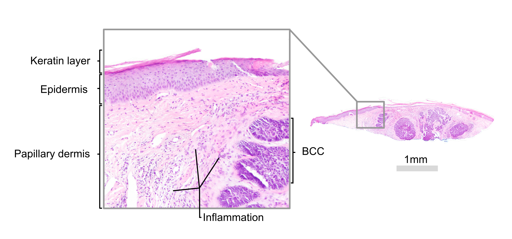
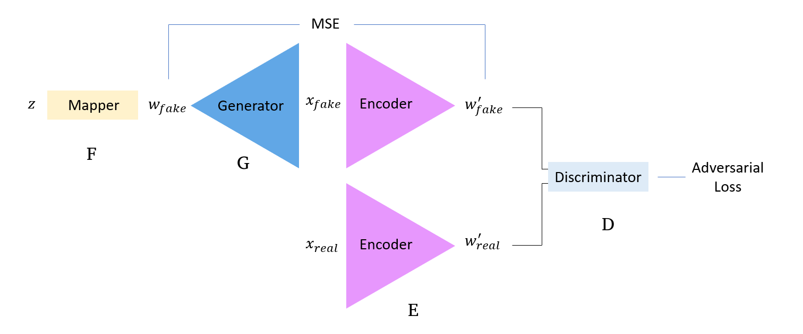
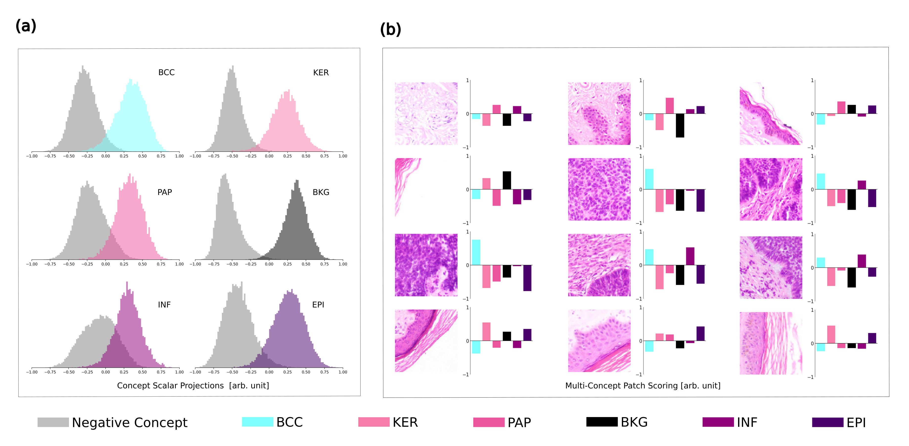
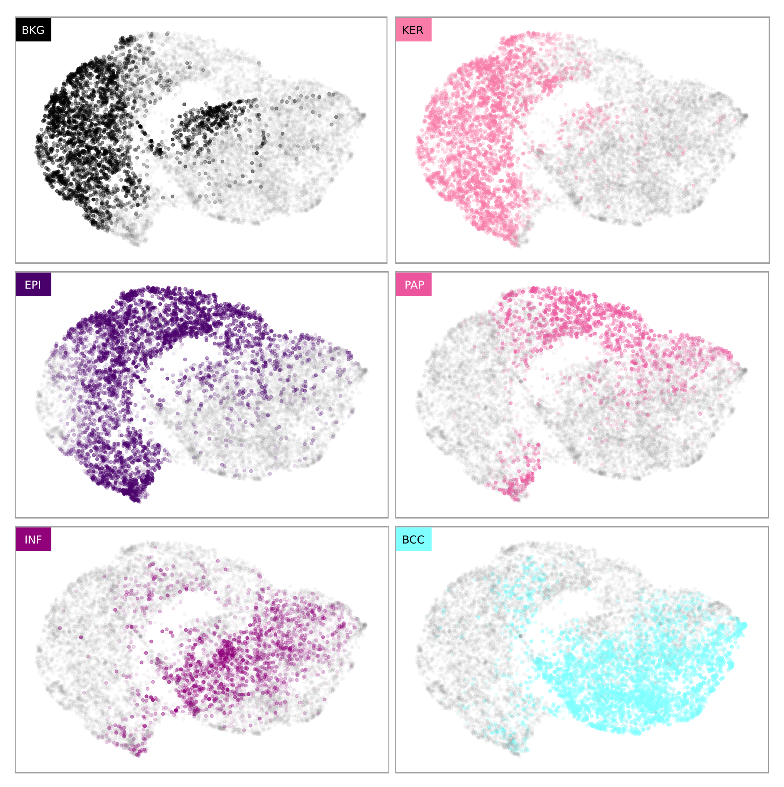
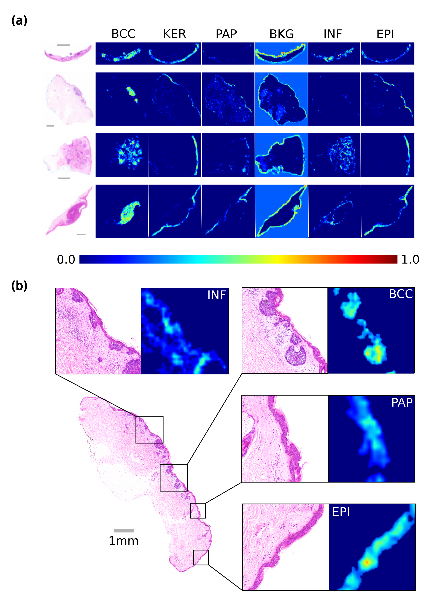
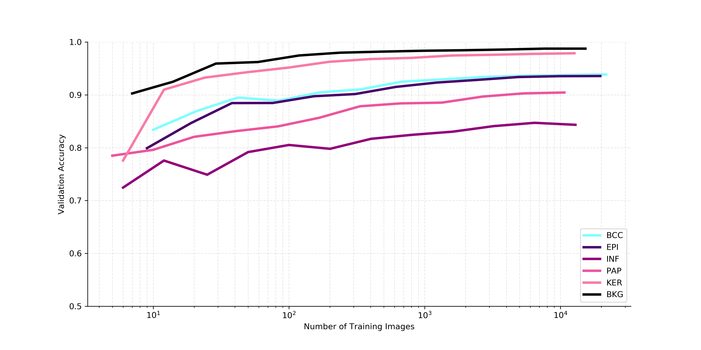
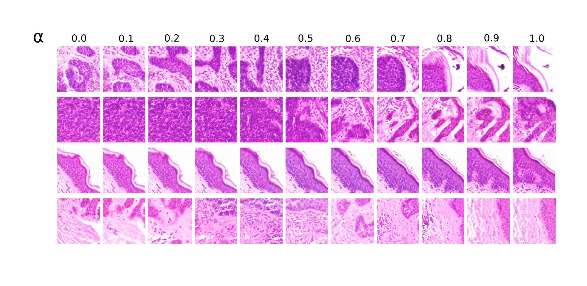
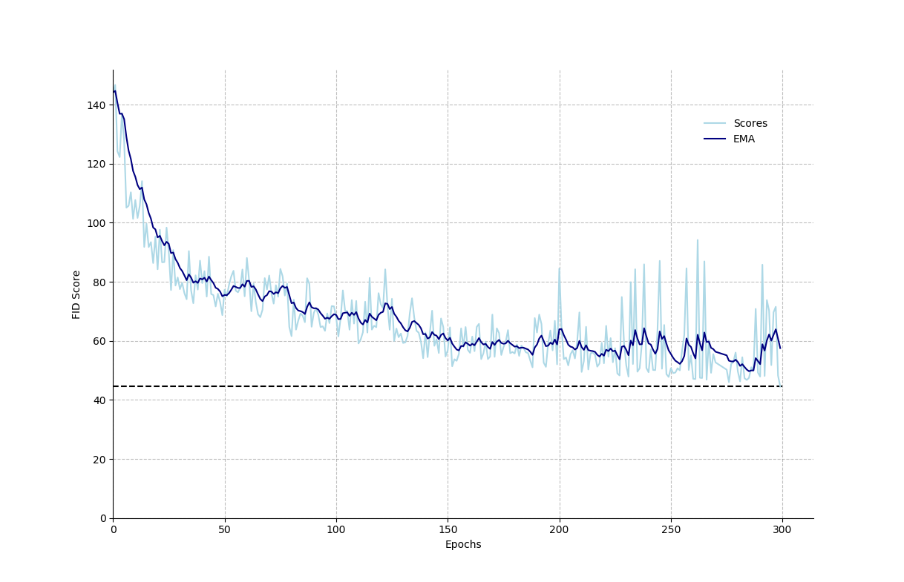
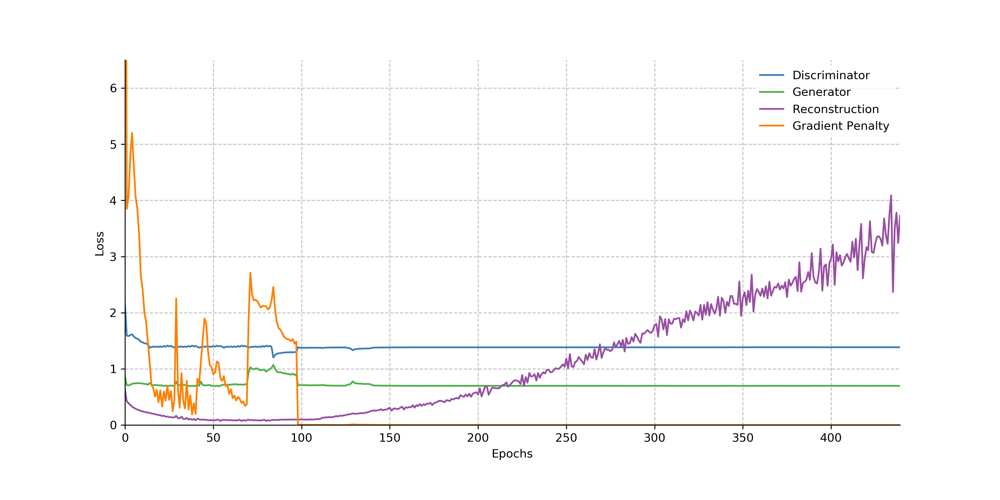
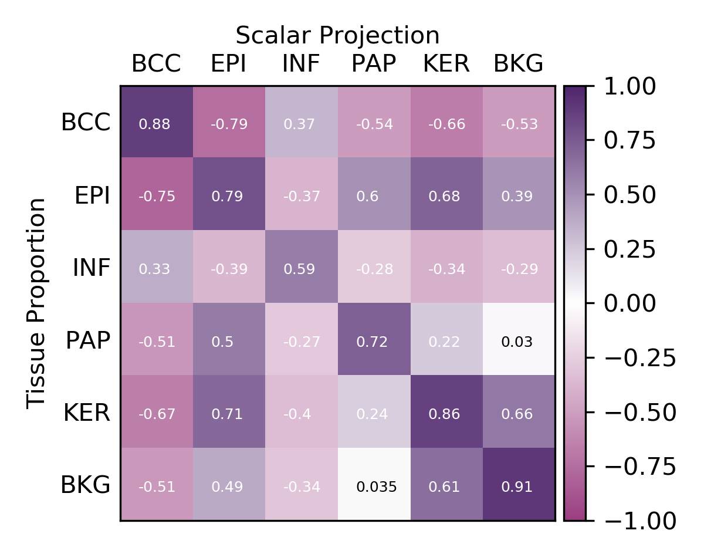

Posted: 28 March 2021 | Updated: 28 March 2021 | Status: In Review | Cite this Article ▾
@article{thomas2021CVGM,
title = {Characterization of Tissue Types in Basal Cell Carcinoma Images via Generative Modelling and Concept Vectors},
author = {Thomas, Simon M and Lefevre, James G and Baxter, Glenn and Hamilton, Nicholas A},
year = {2021},
publisher = {GitHub},
journal = {GitHub Pages},
howpublished = {\url{https://github.com/charlespwd/project-title}},
}
Characterization of Tissue Types in Basal Cell Carcinoma Images via Generative Modelling and Concept Vectors
a - Institute for Molecular Bioscience, The University of Queensland, St Lucia, Australia
b - MyLab Pathology, Salisbury, Australia
Abstract
The promise of machine learning methods to act as decision support systems for pathologists continues to grow. However, central to their successful adoption must be interpretable implementations so that people can trust and learn from them effectively. Generative modeling, most notable in the form of adversarial generative models, is a naturally interpretable technique because the quality of the model is explicit from the quality of images it generates. Such a model can be further assessed by exploring its latent space, using human-meaningful concepts by defining concept vectors. Motivated by these ideas, we apply for the first time generative methods to histological images of basal cell carcinoma (BCC). By simultaneously learning to generate and encode realistic image patches, we extract feature rich latent vectors that correspond to various tissue morphologies, namely BCC, epidermis, keratin, papillary dermis and inflammation. We show that a logistic regression model trained on these latent vectors can achieve high classification accuracies across 6 binary tasks (86-98%). Further, by projecting the latent vectors onto learned concept vectors we can generate a score for the absence or degree of presence for a given concept, providing semantically accurate “conceptual summaries” of the various tissues types within a patch. This can be extended to generate multi-dimensional heat maps for whole-image specimens, which characterizes the tissue in a similar way to a pathologist. We additionally find that accurate concept vectors can be defined using a small labeled dataset.
1. Introduction
1.1 The Future of Pathology
Computational Pathology is a growing field that is concomitant with the increasing availability of digitized histological imaging. Central to the field is the application of machine learning technology, trained to detect, segment, grade and classify cancers of various types1–4. Designed as decision-support tools, there is growing opportunity to incorporate computational analysis into the pathologist workflow5. Indeed, as pathology departments transition to digital imaging, it is expected that Artificial Intelligence (AI) approaches will be necessary to analyse and interpret high-volume data. As the machine learning field matures, it is anticipated that pattern recognition tasks will become entirely automated. This is motivated by recent publications which match expert-level performance on classification and grading tasks6–8.
With the promise of computational pathology, it is important to recognize that pattern recognition is not the entirety of the role of pathologists. Pathologists are disease experts, whose knowledge spans chemistry, molecular biology, genetics and physiology. They have sophisticated models of and explanations for disease, integrating information across several domains. Observed patterns tend to fit within this framework. If they do not, pathologists can also conjecture new explanations which may ultimately further our scientific understanding. We should therefore expect that decision-support systems will feed into the pathologist information pool, alongside immunohistochemistry, genetic testing, individual circumstance and family history.
1.2 Interpretable Diagnostic Systems
In developing these tools, it is important to consider what we really want from decision support systems. What are we directing them to learn, and what are we wanting them to do? In the context of histopathology, basal cell carcinoma (BCC) is the most common form of skin cancer (approx. 60% of all diagnoses9). This disease manifests as varying-sized groupings of small purple cells under H&E staining (Fig. 1). In many cases, a rule of “purple pixels” would enable a sufficiently accurate classification. However, in difficult cases, the morphology can overlap with other cancer types, such as intraepidermal carcinoma or basosquamous carcinoma. The “purple pixels” rule would fail to discriminate in those instances. We know why such a rule fails, and would understand why such a classifier could make that error. But ideally, we would like to train a system to effectively discriminate between those various cancer types. Indeed, it would be valuable, arguably necessary, to know the discriminatory features the system uses, just as a junior pathologist must learn them from a senior pathologist.

Figure 1: The main tissue types found within the superficial layers of the skin. The keratin layer varies in thickness depending on the site of the specimen. It sits above the epidermis, which is the healthy epithelial tissue of the skin. It is supported by the papillary dermis, which provides elasticity and strength to skin, and contains vessels to nourish the epidermis. Within the dermal region areas of inflammation are common, often associated with disease states, such as basal cell carcinoma (BCC). BCC emerges from the basal layer of the epidermis, and grows down into the dermis.
Unfortunately, the rules which machine learning systems learn on their own are not directly available from the trained model. Instead, we ourselves must guess at what the system is using. Experience tells us that neural networks tend to identify the most discriminatory features, independent of their relevance to the human-meaningful context. This may involve a special case of over-fitting, where the system has learned to use spurious features which do not generalise. For example, one deep neural network learned to predict hip fractures in radiographs by utilising confounding patient and hospital data, performing no better than random on an external test set10. In this case, the features we would expect it to use (i.e. fractures), were not learned or utilized. The authors conclude that these results impinge on the ability of computers and clinicians to effectively cooperate.
It is critical to understand what features a system is using in its decision processes. Attempts to find out have lead to the field of machine learning interpretability. Attribution methods using gradients11–14 emerged as a means of finding what part of the image most contributes to a particular prediction. The exact features are then inferred from a heat-map overlaying the image15. Feature visualization techniques16–18 attempt to identify features directly, optimizing input images to elicit a desired response from the network. This technique reveals that for well-constrained problems (e.g. 1,000 class object classification), networks tend to utilise human-meaningful features to discriminate object classes. This is because human-meaningful features often are robust means of discrimination. Later work suggests that models can be disincentivized from learning spurious features by additional adversarial training19. This enables feature visualisation to be performed natively, without requiring natural-image regularization techniques central to all previous works16,20,21. Indeed, when trying to reconstruct images from their feature representations20,22, it was found that adversarially trained networks preserve natural image characteristics19, enabling the original image to be reliably reconstructed. Further, using just the implicit knowledge in classifiers, adversarial generator networks (image synthesis) can be trained to produce diverse and realistic images of any class23.
Collectively these works lead us to think that there is an important link between the tasks of image classification and generation. They are connected by high quality learned features/representations, which when suitable for one task compliment the other. Critical to learning these features is the inclusion of adversarial training, either as part of classification or image generation tasks. The advantage of generative tasks is that interpretability is built in to the model itself. It is explicit from the ability to generate images realistically whether a network has learned the correct features. It shows us directly what it has and has not learned, and, although still qualitative, can be understood by domain experts. Such a system is thus “naturally interpretable”24. We therefore consider the exploration of generative modelling a promising means to achieve both a high degree of discriminatory performance and interpretability.
1.3 Generative Methods for Interpretability
As proposed above, the appeal of generative methods is that they can show explicitly the quality of the knowledge that has been learned. We infer from a network’s ability to generate diverse and realistic images that it has learned important characteristics of the data, while also minimising the presence of spurious features. In other words, instantiated in the network’s latent space is an explanation of how the image domain works.
Generative Adversarial Networks (GANs) have demonstrated an impressive ability to model complex image distributions25, in particular for generating realistic human faces26–28. By labeling images as containing a particular concept e.g. “smiling”, the feature representations of these images can be used to define concept vectors (Section 2.4). By interpolating points along the vector we can generate images which fall along a spectrum of smiling to not-smiling. The fact that concepts can be defined arbitrarily e.g. gender, hair-color, age29, provides enormous flexibility and power to this technique, especially towards model interpretability. We can scrutinize not just the quality of the images, but the quality and structure of the latent space, all in terms of human-meaningful concepts. Visualisation show us whether the space is continuous and cohesive, or arranged in a parsimonious way e.g. transitioning between two faces doesn’t have an intermediate point that exhibits discontinuities.
GANs have previously been applied to several cancer types and image problems in digital pathology30–34, however their full potential for model interpretability has only just begun to be explored. The foundational work towards this end is PathologyGAN35, trained to generate breast cancer tissue, and subsequently invert the network to encode real images36. They demonstrate that high-level features can be learned and manipulated by interacting with the latent space. However, the application to classification tasks is not explored. Further, the dataset is derived from tissue microarrays, which removes the whole-tissue context from the images.
1.4 Application to Basal Cell Carcinoma
In this study we apply generative modelling to basal cell carcinoma images for the first time. With the recent introduction of the Adversarial Latent Autoencoder (ALAE)29, it is possible to train generative models in a stable and reliable manner, as well as simultaneously encode real images into the latent space. We train an ALAE network to encode and generate realistic images of the tissue types found in the superficial layers of the skin (Fig. 1). We build upon previous work by selecting the dataset so that the network can learn the full-context of the image domain, and thus model the relationships between tissue types in an unsupervised manner. We then use labelled images to define concept vectors in terms of tissue types (BCC, epidermis, keratin, papillary dermis, inflammation and background) to inspect the quality of the model and latent space. This additionally enables us to perform classification to characterize image patches and whole-tissue images in a naturally interpretable way.
2. Methods
2.1 Dataset
We utilized the non-melanoma skin cancer segmentation dataset created in previous work37. The data consists of 290 H&E slides representing typical cases of basal cell carcinoma, squamous cell carcinoma and intraepidermal carcinoma, across shave, punch and excision biopsy specimens. The data is annotated with segmentation ground-truth at the pixel level for 12 independent tissue classes. Using this data, we created a new dataset of overlapping patches (256×256 pixels with 50% overlap) containing the following tissue types: BCC, keratin (KER), epidermis (EPI), papillary dermis (PAP), inflammation (INF) and background (BKG). These tissue types are located in the superficial layers of the skin, and the overlapping patches capture their contiguous spatial relationships. The only condition of inclusion was that the patch contained at least 1 pixel of either the EPI or BCC class from the segmentation ground-truth (BCC originates in the epidermis). This enabled the surrounding classes to be included within a radius of at most 181 pixels (~121μm). The patches were assigned to training, validation and test splits (70:15:15) based on their original whole-slide image. The resulting dataset contained 53,586 training, 16,862 validation, and 14,076 testing images.
2.2 Network Architecture
The Adversarial Latent Autoencoder (ALAE)29 provides a highly generalizable approach to adversarial training and showcases impressive results across image reconstruction, generation, and manipulation. The unique training regime of the ALAE derives from decomposing the traditional GAN paradigm of two networks into four networks. The traditional generator is decomposed into a mapping network \(F\), and a generator \(G\), and the traditional discriminator is decomposed into an encoder \(E\) and discriminator \(D\) (Fig. 2). It is trained with three separate update steps.
Encoder & Discriminator : train to discriminate between real and fake images
Mapper & Generator: train to make fake samples match real distribution
Generator & Encoder: train to auto-encode the latent vector using MSE
This architecture thus balances both the adversarial and autoencoding components of the loss, resulting in highly stable training. The above update steps can be formalised as follows:
\[
\min_{F, G}\max_{E, D} V(F, G, E, D) \\
\min_{E,G}\Delta(F || E \circ G \circ F)
\]
\(E[.]\) denotes expectation, \(f\) is the softplus activation function38 and \(\Delta\) is a distance measure. Following the original ALAE formulation, we utilised the \(R_1\) regularization term, which drives the input gradients towards zero39. This was included only for real data, and is defined as:
A \(\lambda\) constant denotes the weighting of the term in the loss.

Figure 2: An ALAE network is composed of four networks in contrast to the traditional two for GAN training. The fully-connected \(F\) network maps from the known distribution \(z\) to a learned distribution \(w\). This feeds the generator network \(G\), to produce a fake image \(x\). The encoder network \(E\) maps the image back to \(w'\), which then feeds a fully-connected discriminator network \(D\). An additional autoencoding optimization step minimizes \(w\) and \(w'\) where \(w' = E(G(w)\). This results in stable adversarial training with the addition of being able to encode and decode real images via \(G(E(x))\).
We developed our own implementation using Tensorflow 2.240 and followed the Style-based architecture. We included Weight Modulation/Demodulation as an option in addition to Adaptive Instance Normalization, introduced in StyleGAN228 architecture. We further adapted the network to train end-to-end using the additive and residual layers. Despite successfully training at full-scale on various datasets (up to 256×256), we found that the progress of training was easier to track by using progressive growing (Section 2.3). Therefore, all results that follow were trained with progressively grown networks using Adaptive Instance Normalization.
For all models we utilised a latent space of size 512, and kept the number of filters per block consistent with similar work29,41–43. This generally follows 4×4×512, 8×8×512, 16×16×512, 32×32×512, 64×64×256, 128×128×128. The mapper network \(F\) consisted of eight fully-connected layers, and the discriminator \(D\) contained 3 fully-connected layers.
The code is available at https://github.com/smthomas-sci/SkinCancerConceptVectors
2.3 Training Regime
In a progressively grown manner we trained successive blocks up to 128×128 pixels as follows. Each block was made up of 2-3 convolutional and normalization layers, as well as up or down sampling operations (refer to code for full details). After training the 4×4 block for 800,000 images (~14 epochs), each block was then faded to the next scale over 14 epochs, where the outputs from blocks \(B_i\) and \(B_{i+1}\) were merged using \(\alpha \cdot B_{i+1} + (1-\alpha) \cdot B_{i}\) , with \(\alpha\) incremented over the 14 epochs from \(0\) up to \(1\). We then fine-tuned the network for a further 14 epochs before scaling again. The number of epochs was chosen empirically based on the convergence time at each block, amounting to double the number of images used in the original ALAE paper. Upon reaching 128×128, the model was fine-tuned for 300 epochs while monitoring FID score44. At each respective scale we used batch sizes of 512, 256, 128, 128, 128, and 64, shared across two NVIDIA SXM2 Tesla 32GB V100 GPUs. We used \(\lambda=0.1\) for all scales except for 64×64 and 128×128 where \(\lambda=10\). We found the small value encouraged successful training in the early stages. We used an Adam optimizer with \(\beta_1 = 0.0\) and \(\beta_2 = 0.99\) and a learning rate \(\alpha = 0.0010\). All layers were updated using the learning rate equalization technique26. Style-mixing regularization was performed every 16 batches.
Training was monitored via visual inspection of generated and reconstructed images, as well as FID. The weights were saved every epoch and an exponential moving average (decay=0.999) of the weights for the \(F\) and \(G\) networks were kept and used for all visualisations. FID was calculated using 10,000 randomly generated images. The final results were derived from our best model, using the exponential moving average (EMA) weights.
2.4 Concept Vectors
The use of concept vectors has been shown to be helpful in understanding how machine learning systems make decisions45,46. Although there are varied approaches to defining concept vectors, informed by45 we defined a regression model as:
where \(z\) is the real value (\(z \in \{-\infty, \infty\}\)) before the logistic transform for classification, \(n\) is the dimensionality of the latent vector \(x\), and \(\alpha\) is the intercept. When \(z=0\) the corresponding probability is \(p=0.5\), defining the decision boundary. We then define the concept vector as the normalized derivative as follows:
Using the segmentation ground truth for each patch, we created positive and negative concept datasets based on the proportion of the tissue type present. We picked a threshold of 0.2, indicating that at least 20% of the image needed to belong to the positive class. If the concept was not present it was allocated to the negative class. The class balances are shown in Table A1. Using these datasets we trained six logistic regression models to learn the \(\alpha\) and \(\beta\) terms for each tissue type. Although the classes were unbalanced this did not meaningfully effect classification performance (Section 3.3).
For each patch we used the encoder network to get a latent representation, \(w = E(x)\). We then performed a scalar projection, taking the dot product of the latent representation with the learned concept vector to obtain a score \(s\):
\[
s = w \cdot C + a'
\]
This score indicates how far along the concept vector a particular image falls. This enables us to measure both the presence and absence of a concept, and more interestingly, the degree to which it is present.
3. Results & Discussion
3.1 Encoding, Decoding and Random Generation of Images
Our style-based ALAE architecture successfully learned to both generate and reconstruct realistic images across a wide variety of tissue types and morphological contexts (Fig. 3). It can be seen that the network has modelled their natural variations across the full-range of orientations. In particular we can see several manifestations of BCC morphology, with natural variances in staining, as well as contexts of surrounding tissue. We also note subtle details such as blue ink (Fig 3b, arrows), which is an orientation marker for the pathologist. Our best performing model achieved an FID score of 44 (Fig. A1), based on 10,000 randomly generated images. Although this would not always be considered a good FID score, visually these images appear to encode and reconstruct the general features of a diverse and complex image domain.
Figure 3: Generated images from the ALAE network. a) Representative reconstructions for real images, \(G(E(x))\), show that the both global context of an image as well as relevant tissue type and features can be successfully generated. b) Random samples showcase a diverse set of images, \(G(F(z))\) where \(z_i \sim N(0,1), 1 \le i \le 512\). The arrows in row 2, column 6 point to blue ink, an orientation marker for pathologists.
It is important to note that the style-based ALAE encoder \(E\), is not optimized to match exact spatial features. Instead, it is trained to extract a statistical summary which is used to generate a clinically similar image. To this end, the placement of particular features is not penalized as long as they represent the image semantics. For example, the reconstructions in Fig. 3 show that the proportions of each tissue type as well as their arrangement is largely correct. We note that using a statistical summary for reconstruction is in contrast to a perceptual reconstruction which is most commonly performed47,48. However, given the enormous variability found in cellular morphology, it is arguable that the statistical summary is more effective in this case. This is similar to reconstructions of breast cancer images, learned via minimizing latent space distance, which produce an approximate but semantically similar match to the original image36. We conclude then that semantic feature summaries are useful, and indeed, all that is needed to effectively match input and output image pairs.
3.2 Training Stability
As the model was progressively grown, we experimented with images beyond 128×128 pixels. Interestingly, we found that training became unstable when transitioning to 256×256. The reason for this is not immediately apparent given that the 128×128 sized images can be modeled effectively, and the training proceeded stably and reliably without encountering those problems. We considered firstly if it was an issue of fading too quickly, however, even at half the rate (fading over 1,600,000 images) we observed mode collapse and instability. Indeed, even our fade rate was half the original ALAE paper at 400,000 images. Our second approach was to double the number of parameters in the 256×256 block. This again failed to overcome the problem. Interestingly, we found we could train successfully at this resolution on both human faces and dermatoscopic datasets. In contrast, we also failed to converge at this scale for the breast cancer images from PathologyGAN. This lead us to consider whether this was an issue inherent to the way the problem was framed. We will elaborate on this idea in Section 3.9.
For insight into model stability up to 128×128, we show in appendix Fig. A2 the training curves observed from our best model, which was typical of all our experiments. Over the course of training, the adversarial loss components remained fairly constant, with the gradient penalty converging once reaching 128×128 pixels. A noticeable feature is the increasing reconstruction loss. In part, we explain this as being due to the improving quality of the model (Fig. A1). As realism improves, the feature space increases in complexity and accordingly, so does the opportunity for error. However, we also attribute this to the instability of training in the final 100 epochs (Fig. A1). We observe that at this stage, randomly sampled images are more stable across epochs in their \(w \rightarrow x\) mapping, whereas the encoder-generator mapping of \(x \rightarrow w \rightarrow x'\), and the complimentary latent autoencoding mapping, \(w \rightarrow x \rightarrow w'\) are less so (data not shown). To improve this the encoder network could increase the weight of the reconstruction loss, or alternatively, perform fine-tuning once satisfied with the generator. However, Fig. 3 demonstrates that a suitable reconstruction quality can be readily achieved.
3.3 Image Domain Coverage
We further inspected the quality of the model by looking at 2D projections of the latent vectors of random samples. In Fig. 4 below, we get an overview of how diverse the learned representation is, as well as an indication of the arrangement of the space. To do this we used 1,600 randomly sampled latent vectors and generated images. We used the UMAP algorithm49 to perform dimensionality reduction, alongside the Jonker-Volgenant algorithm50,51 to perform linear assignment. Across the 1,600 images, we recognize morphological and contextual similarities between image neighborhoods, all of which transition naturally within a continuous space. For example, BCC groups are based on staining color (a range of light to dark purples) and tissue proportion, as well as proximity to either the epidermis or papillary dermis. Importantly, there is no evidence of mode collapse, or even repetition of features.
An obvious pattern in Fig. 4 is seen in the space being arranged according to the angle of the tissue with the background. This is also recognizable in the case of the location of BCC in the surrounding dermal tissue. This is an important observation, telling us that images which are essentially rotations of each other are assigned to different locations within the space (see Section 3.8-9 for further discussion). To improve our ability to inspect the model, we return to this mode of inspection in 2D space in Section 3.5 by utilizing concept vectors. This greatly simplified the process as well as provides further insight into the quality of the model.
Figure 4: 1,600 random samples arranged via UMAP dimensionality reduction and linearly assigned to a square space using the Jonker-Volgenant algorithm. The x and y axes constitute dimensions 1 and 2 of the UMAP output. This showcases the diversity of images that can be generated as well as gives some insight into how the latent space is arranged.
3.4 Feature Discrimination with Concept Vectors
With the encoder network \(E\), we generated latent vectors for the training data, and trained logistic regression models for each of the six tissue types / concepts of interest. In Table 1 we show the consistently high classification accuracies across the training, validation and test sets for all six concept classes. With the exception of INF at 86.1%, all other classes had a test accuracy between 93% and 98%. High precision and recall across all classes also indicates that the class imbalance in the training data did not affect test performance. This supports the claim that features useful for image generation are similarly useful for image classification. This is not to say that the discriminative task could not have been achieved otherwise, but only that the learned features correspond closely to realistic domain features.
Table 1: Binary classification scores for each class using logistic regression on concepts. Six models were trained to predict concept versus non-concept classes. This shows that individual tissues classes are highly separable. High AUC, Precision and Recall scores indicate that the class imbalances in the training data did not affect performance.
Class
Training Acc.
Validation Acc.
Test Acc.
Test AUC
Test Precision
Test Recall
BCC
0.947
0.938
0.944
0.988
0.918
0.961
EPI
0.945
0.936
0.949
0.987
0.941
0.922
KER
0.977
0.979
0.971
0.988
0.950
0.938
PAP
0.923
0.904
0.934
0.976
0.892
0.801
INF
0.843
0.843
0.861
0.926
0.769
0.784
BKG
0.987
0.987
0.985
0.999
0.980
0.973
Using the coefficients and intercept from the classifier, we measured the scalar projection of all positive and negative concept images onto the six concept vectors. The distributions of the scores are shown in Fig. 5a, demonstrating how the concept vector is able to effectively separate the image groups. We note that the overlap in the INF distribution corresponds to the lower classification performance seen in Table 1. This could in part be due to the overlap in features between inflammation, papillary dermis and BCC. For example, INF and BCC often co-occur, yet BCC can also be seen with PAP, with no INF present. The biological context makes it likely that the INF concept vector is associated with BCC (see below and Section 3.3).
We present in Fig. 5b conceptual summaries of patches containing various combinations of tissue types. The scalar projections of the latent vector onto the six concept vectors provide good characterisations of the image. Scores below 0 indicate a probability less than 50% for the presence of the concept in at least 20% of the image. The positive scores correspond to the presence of the concept in at least 20% of the image. We measured whether the score correlates with the proportion of tissue (Fig. A3), and found strong correlations for BCC (0.88), EPI (0.79), KER(0.86), BKG (0.91) and PAP (0.72). We observed that INF(0.59) scored lower and also had a positive correlation with BCC(0.33), affirming our biological intuition.

Figure 5: Using scalar projections to characterize tissue in image patches. a) The distributions of scores for positive and negative concept images for each class. The scores are normalized between -1 and 1, where >0 is positive for the concept. b) Individual images with scores for all six concepts provides a way to give a conceptual summary of the image. As shown, multiple concepts can be present in the same image. Scores less than 0 indicate a less than 50% chance of the concept being present in at least 20% of the image.
3.5 Latent Space Structure
We utilized the ability to score images in terms of concepts to return to the problem of understanding the latent space. In Fig. 6, we show UMAP dimensionality reductions for 10,000 latent vectors from the training images. We then labeled each point as a color gradient mapped from the score for each concept. Interestingly, the figure shows that the concepts are arranged in the space in a similar way to their biological context. It can be seen that BKG, KER and EPI are located next to or co-locating with each other. Similarly, EPI and PAP are highly correlated and PAP transitions towards INF and BCC. This corresponds to the image domain where these tissue types adjoin as seen in Fig. 1. Therefore, these maps reveal a conceptual landscape which aligns with our biological expectations.

Figure 6: UMAP projections of 10,000 latent vectors from the training data. This indicates the space is organized in a biological meaningful way, where adjoining tissue types are closely located in the space. It also indicates that spatial orientation of tissue within the patch is an important factor.
3.6 Whole-Image Characterization
We next applied concept summaries to the whole-image context. Whole-images present the full tissue specimen, including regions of tissues that the network was not trained on. In a sliding window fashion (step size of 32×32) we generated a latent vector for a 128×128 patch and then saved the score for all six concept vectors to produce a multi-dimensional heat map. We then set a threshold for positive scores revealing which parts of the specimen contain each concept (Fig. 7). This was performed on whole images of varying sizes, including punch, shave and excision biopsies (Fig. 7a & 7b). Qualitatively we see that the relevant tissue types have been outlined or segmented by the concept scores. High EPI scores occur along the epidermis, as does KER over keratin regions. INF is seen to surround the BCC regions, and BKG has identified the perimeter of the specimen. This is consistent with our observations in Fig. 6. As an interesting side note, the heat maps also indicate that the inclusion of tissue regions that were not in the training data (below the superficial layers) did not adversely affect the visualisations, with mostly negative or mildly positive scores for all concepts.

Figure 7: Conceptual summaries of whole-tissue images for shave, punch and excision biopsy specimens. The grey bar designates 1mm distance. All maps indicate positive concept scores > 0 a) High-level overview of concept summaries for a variety of specimen types showing that the concept summaries highlight quite well the relevant tissue regions. b) A finer resolution example of an excision specimen where the concept scores provide accurate summaries of the tissue regions. Best viewed in color.
Scoring images at this scale provides a high-level summary which utilises human-meaningful descriptors. This follows a similar approach to previous work37, which argues that naturally interpretable systems would characterise the problem domain in the same way a pathologist would. However, semantic segmentations provide only coarse descriptions of the tissue, whereas concept vectors are much more flexible and can be defined abstractly. For example, the concept of “mild inflammation” doesn’t directly correspond to pixels, but rather a region, within which another concept may be equally relevant. There is thus opportunity to extend this idea to include as many concepts as necessary to provide a complete pathological description of the tissue, depending on what scale the network is trained on. This is similar to how a pathologist works at various magnifications, utilizing different terminology and disease processes suitable for each context.
3.7 Minimal Concept Vector Definitions
The advantage of generative modeling is that it can be performed in an unsupervised manner. However, in order to interpret and utilise the model we require labels. In this work we were able to leverage previously labelled data. However, in most practical settings this is not possible. This therefore prompted us to ask, how many labels do we require in order to define quality concept vectors?
For this we come to a surprising conclusion; not nearly as many as traditionally required for image classification tasks. Fig. 8 shows the overall accuracy after training classifiers on a range of training dataset sizes. The performance metrics shown in Table 2 are from the models trained on the full dataset, approximately 104 images. In Fig. 8 it can be seen that with 103 images, performance is maintained, and with 102 images, performance only drops by approximately 5%. For more obvious classes, such as BKG, 10 images each of positive and negative examples keeps performance at 90%. In practice, this may translate to only needing 100-500 labels of each class which is easily achievable.
We propose that the small number of labels is possible because the network has already learned the image domain by training on a large body of unlabeled data. The subsequent use of labels is just a means for people to understand and interact with the knowledge instantiated in the network. Because only a small number of labels is needed, yet classification is high, we interpret this as further evidence for the usefulness of features for both generation and classification tasks.

Figure 8: Concept vector accuracies for decreasing numbers of training data. Performance decreases non-linearly with training set size, indicating that substantially smaller numbers of labels can be utilized without compromising accuracy. This means that performing classification after training an unsupervised generative model may be much less laborious. Best viewed in color.
3.8 Latent Space Complexity
In Section 1.8, the use of interpolating points through the latent space was introduced as an interpretability tool. Previous works show that interpolations between images of faces tend to follow natural journeys, where the in-between faces have similarities to both pairs and link semantically27,29. However, in the case of histology images, the meaning of intermediate images remains elusive. In Fig. 9 we show some example interpolations where there is no clear reason why the intermediate images are what they are. An obvious example is in the last row, where the intermediate image between healthy epidermis and papillary dermis is inflammation with some BCC. This does not make sense in the context of histology. In fact, the endpoint images are almost rotations by 90 degrees. A realistic journey might thus rotate the image, not firstly traverse regions of unrelated tissue types. Indeed, this appears to be a problem for breast cancer images as well36.

Figure 9: Linear interpolations between images pairs in the latent space results in unrealistic journeys, where intermediate images are realistic but have no obvious connection to the endpoints.\(\alpha\) is the blend between latent vectors, where the intermediate image is generated from \(w_I = \alpha w_1 + (1-\alpha)w_2\).
The problem is further recognized when performing vector arithmetic using concept vectors. We can move any image linearly in the direction along the concept vector, such as seen with attribute editing with faces52. The goal here is to increase the presence of a certain concept within the image. However, in our work we find that what often results are unrealistic images that score high for the concept, much like with adversarial attacks53. Although images can be usefully summarized when real, we can’t just move any image in the direction of a pure concept due to the complexity of the latent space.
3.9 Image Domain Complexity
We have seen that while the latent space has a biologically meaningful structure (Fig. 6) which provides a powerful tool for discriminating and quantifying clinically important features ((Fig. 5) and 7), it falls short of the linear semantic structure seen in some other work29, as demonstrated via interpolations (Fig. 9) and extrapolation along concept vectors. We propose that this limitation is a result of the nature of the image domain. The major difference between modelling histological images compared to common deep learning image datasets such as faces, bedrooms, or cars, is that the latter contain consistent global landmarks within the imaging. For example, faces will reliably have a head in the center, with two eyes, a nose and mouth. The model learns all the variations around those major features. In contrast, histological imaging has no consistent global landmarks, but rather has varied landmarks and has similarities to the task of texture synthesis. In the arrangement of the latent space in Fig. 4 we see that the encoding of spatial information and tissue features is entangled. Images that are essentially rotations of each other are placed in distinct areas of the latent space, rather than being rationally distinguished by a single “rotation” dimension. Lacking global landmarks to attach concepts to, we speculate that the same features are learned redundantly in different regions. This is a plausible explanation for the non-linearity seen in the latent space. It also indicates a potential limitation on the learning efficiency of the model - a pathologist does not learn a set of features for every possible orientation of the specimen.
We further speculate that the training instability seen at the 256×256 scale is linked to image domain complexity and lack of global landmarks, and the demands that this places on the learning capacity of the model. Interestingly, when we tested our model on other datasets we saw a similar failure for breast cancer imaging but not for faces or dermatoscopic data, where global structure is present. We do note that other work has shown that histological images can be generated up to the size of 224×22435 and 1024×102433 pixels using GANs. It may be that the addition of the autoencoding loss interferes with learning images without consistent global structure; the specific adversarial loss function used may also play a role35,54. Training at higher resolution would be desirable, allowing smaller scale features to be represented and potentially incorporated into tissue characterization and discrimination tasks. Thus resolving the issues around image domain complexity would likely have benefits in both latent space interpretability and in more powerful modelling.
4. Conclusion
Here we presented a highly-interpretable way of using machine learning to perform tissue characterization of basal cell carcinoma via generative modelling. We trained a system to encode and generate realistic images of a variety of tissues types in the superficial layers of skin. The quality of the features the model has learned is explicit from the quality of the generated images, making the model naturally interpretable. In contrast to previous methods, our network training process was stable and reliably produced high quality images. Our results indicate that the network learned relevant, and consequently, highly discriminative features which enable accurate classification. This further served the purpose of performing tissue characterization via concept vectors. This allowed us to summarise image patches using high-level, human-meaningful descriptors which we can interpret. This was extended to whole-tissue specimens which results in a “conceptual summary” of the entire slide. We also found that the number of images needed to define accurate concept vectors is between 100 and 500 patches, which significantly reduces the time cost of developing high-performing classification models. This promising methodology is applicable to many histological datasets where characterizing and understanding morphological features could be improved with the use of concept vectors.
Declaration of Competing Interest
The authors declare that they have no known competing financial interests or personal relationships that could have appeared to influence the work reported in this paper.
Acknowledgements
We wish to acknowledge The University of Queensland’s Research Computing Centre (RCC) for its support in this research. JL is supported by Australian Research Council Discovery Grant DP180101910. MyLab Pathology provided access to their archived histological collection. Financial support for SMT was provided by The Australian Government Research Training Program (RTP) and The Laurel Joy George Perpetual Scholarship.
Appendix
Table A1: Data composition and class balances. Patches were allocated to positive and negative classes based on a threshold of 0.2 for proportion of the tissue. If a tissue type was absent, it was assigned to the negative class. The splits follow a 70:15:15% split based on the original whole slide images. The class balances were consistent across the training and test set, with the validation varying for some classes. The ratios for each class and data split are positive : negative class numbers.
Class
Train +
Train -
Ratio
Val +
Val -
Ratio
Test +
Test -
Ratio
BCC
21,745
26,124
0.81
5,218
9,572
0.55
5,392
6,630
0.81
KER
12,691
25,788
0.34
3,264
8,480
0.38
2,656
7,653
0.35
PAP
10,698
35,232
0.28
4,523
9,859
0.46
2,745
9,615
0.29
BKG
15,288
27,340
0.45
4,736
9,355
0.51
3,718
8,174
0.45
INF
12,905
31,786
0.44
3,784
10,700
0.35
3,691
8,307
0.44
EPI
19,676
22,450
0.61
5,271
6,159
0.86
3,805
6,241
0.61

Figure A1: FID scores for the best model across the final 300 epochs of training. The EMA is presented only to aid the eye. The best FID score was 44, marked with the dotted line.

Figure A2: Training curves for our best ALAE network. The adversarial loss components remain stable across all epochs. The gradient penalty converges once reaching full-scale (128×128). The reconstruction error steadily increases over the course of training, perhaps due to the improving quality of the generated images.

Figure A3: Spearman Rank Correlation matrix for concept scores against the respective tissue proportion for an image. Scores tend to have strong positive correlations with their tissue proportion. Also, positive correlations are seen for associated classes, such as PAP, EPI, KER and BKG, as well as BCC and INF.
×
1. Bulten, W. et al. Artificial intelligence assistance significantly improves Gleason grading of prostate biopsies by pathologists. Modern Pathology 1–12 (2020).
2. Campanella, G. et al. Clinical-grade computational pathology using weakly supervised deep learning on whole slide images. Nature Medicine25, (2019).
3. Sirinukunwattana, K. et al. Gland segmentation in colon histology images: The glas challenge contest. Medical image analysis35, 489–502 (2017).
4. Wu, M., Yan, C., Liu, H. & Liu, Q. Automatic classification of ovarian cancer types from cytological images using deep convolutional neural networks. Bioscience reports38, (2018).
5. Bera, K., Schalper, K. A., Rimm, D. L., Velcheti, V. & Madabhushi, A. Artificial intelligence in digital pathology—new tools for diagnosis and precision oncology. Nature reviews Clinical oncology16, 703–715 (2019).
6. Zhang, Z. et al. Pathologist-level interpretable whole-slide cancer diagnosis with deep learning. Nature Machine Intelligence1, 236–245 (2019).
7. Wei, J. W. et al. Pathologist-level classification of histologic patterns on resected lung adenocarcinoma slides with deep neural networks. Scientific reports9, 1–8 (2019).
8. Hekler, A. et al. Pathologist-level classification of histopathological melanoma images with deep neural networks. European Journal of Cancer115, 79–83 (2019).
9. Staples, M. P. et al. Non-melanoma skin cancer in Australia: The 2002 national survey and trends since 1985. Med. J. Aust.184, 6–10 (2006).
10. Badgeley, M. A. et al. Deep learning predicts hip fracture using confounding patient and healthcare variables. NPJ digital medicine2, 1–10 (2019).
12. Dabkowski, P. & Gal, Y. Real time image saliency for black box classifiers. in Advances in neural information processing systems 6967–6976 (2017).
13. Smilkov, D., Thorat, N., Kim, B., Viégas, F. & Wattenberg, M. Smoothgrad: Removing noise by adding noise. http://arxiv.org/abs/1706.03825 (2017).
14. Selvaraju, R. R. et al. Grad-cam: Visual explanations from deep networks via gradient-based localization. in Proceedings of the IEEE international conference on computer vision 618–626 (2017).
15. Adebayo, J. et al. Sanity checks for saliency maps. in Advances in neural information processing systems 9505–9515 (2018).
16. Olah, C., Mordvintsev, A. & Schubert, L. Feature visualization. Distill2, e7 (2017).
17. Olah, C. et al. The building blocks of interpretability. Distill3, e10 (2018).
18. Carter, S., Armstrong, Z., Schubert, L., Johnson, I. & Olah, C. Activation atlas. Distill4, e15 (2019).
19. Engstrom, L. et al. Adversarial robustness as a prior for learned representations. http://arxiv.org/abs/1906.00945 (2019).
20. Mahendran, A. & Vedaldi, A. Understanding deep image representations by inverting them. in Proceedings of the IEEE computer society conference on computer vision and pattern recognition vols 07-12-June-2015 5188–5196 (IEEE Computer Society, 2015).
21. Nguyen, A., Dosovitskiy, A., Yosinski, J., Brox, T. & Clune, J. Synthesizing the preferred inputs for neurons in neural networks via deep generator networks. http://arxiv.org/abs/1605.09304 (2016).
22. Dosovitskiy, A. & Brox, T. Inverting visual representations with convolutional networks. in Proceedings of the IEEE conference on computer vision and pattern recognition 4829–4837 (2016).
23. Nguyen, A., Clune, J., Bengio, Y., Dosovitskiy, A. & Yosinski, J. Plug & play generative networks: Conditional iterative generation of images in latent space. in Proceedings of the IEEE conference on computer vision and pattern recognition 4467–4477 (2017).
24. Rudin, C. Stop explaining black box machine learning models for high stakes decisions and use interpretable models instead. Nature Machine Intelligence1, 206–215 (2019).
25. Brock, A., Donahue, J. & Simonyan, K. Large scale gan training for high fidelity natural image synthesis. http://arxiv.org/abs/1809.11096 (2018).
26. Karras, T., Aila, T., Laine, S. & Lehtinen, J. Progressive growing of gans for improved quality, stability, and variation. http://arxiv.org/abs/1710.10196 (2017).
27. Karras, T., Laine, S. & Aila, T. A style-based generator architecture for generative adversarial networks. in Proceedings of the IEEE conference on computer vision and pattern recognition 4401–4410 (2019).
28. Karras, T. et al. Analyzing and improving the image quality of stylegan. in Proceedings of the IEEE/CVF conference on computer vision and pattern recognition 8110–8119 (2020).
29. Pidhorskyi, S., Adjeroh, D. A. & Doretto, G. Adversarial latent autoencoders. in Proceedings of the IEEE/CVF conference on computer vision and pattern recognition 14104–14113 (2020).
30. Cho, H., Lim, S., Choi, G. & Min, H. Neural stain-style transfer learning using gan for histopathological images. http://arxiv.org/abs/1710.08543 (2017).
31. Tarek Shaban, M., Baur, C., Navab, N. & Albarqouni, S. StainGAN: Stain style transfer for digital histological images. arXiv e-prints arXiv–1804 (2018).
32. Kovalev, V. & Kazlouski, S. Examining the capability of GANs to replace real biomedical images in classification models training. in International conference on pattern recognition and information processing 98–107 (Springer, 2019).
33. Levine, A. B. et al. Synthesis of diagnostic quality cancer pathology images by generative adversarial networks. The Journal of Pathology path.5509 (2020) doi:10.1002/path.5509.
34. Teramoto, A. et al. Deep learning approach to classification of lung cytological images: Two-step training using actual and synthesized images by progressive growing of generative adversarial networks. PloS one15, e0229951 (2020).
35. Quiros, A. C., Murray-Smith, R. & Yuan, K. Pathology GAN: Learning deep representations of cancer tissue. http://arxiv.org/abs/1907.02644 (2019).
36. Quiros, A. C., Murray-Smith, R. & Yuan, K. Learning a low dimensional manifold of real cancer tissue with PathologyGAN. 1–24 http://arxiv.org/abs/2004.06517 (2020).
37. Thomas, S. M., Lefevre, J. G., Baxter, G. & Hamilton, N. A. Interpretable deep learning systems for multi-class segmentation and classification of non-melanoma skin cancer. Medical Image Analysis68, 101915 (2021).
38. Glorot, X., Bordes, A. & Bengio, Y. Deep sparse rectifier neural networks. in Proceedings of the fourteenth international conference on artificial intelligence and statistics 315–323 (2011).
39. Drucker, H. & Le Cun, Y. Improving generalization performance using double backpropagation. IEEE Transactions on Neural Networks3, 991–997 (1992).
40. Abadi, M. et al. Tensorflow: A system for large-scale machine learning. in 12th {}USENIX{} symposium on operating systems design and implementation ({}OSDI{} 16) 265–283 (2016).
41. Karras, T., Laine, S. & Aila, T. A style-based generator architecture for generative adversarial networks. in Proceedings of the IEEE conference on computer vision and pattern recognition 4401–4410 (2019).
42. Huang, H., Li, Z., He, R., Sun, Z. & Tan, T. Introvae: Introspective variational autoencoders for photographic image synthesis. Advances in Neural Information Processing Systems2018-Decem, 52–63 (2018).
43. Heljakka, A., Solin, A. & Kannala, J. Pioneer networks: Progressively growing generative autoencoder. Lecture Notes in Computer Science (including subseries Lecture Notes in Artificial Intelligence and Lecture Notes in Bioinformatics)11361 LNCS, 22–38 (2019).
44. Heusel, M., Ramsauer, H., Unterthiner, T., Nessler, B. & Hochreiter, S. GANs trained by a two time-scale update rule converge to a local Nash equilibrium. Advances in Neural Information Processing Systems2017-Decem, 6627–6638 (2017).
45. Kim, B. et al. Interpretability beyond feature attribution: Quantitative testing with concept activation vectors (TCAV). in International conference on machine learning 2673–2682 (2018).
46. Graziani, M., Andrearczyk, V., Marchand-Maillet, S. & Müller, H. Concept attribution: Explaining CNN decisions to physicians. Computers in Biology and Medicine123, 103865 (2020).
47. Abdal, R., Qin, Y. & Wonka, P. Image2stylegan: How to embed images into the stylegan latent space? in Proceedings of the IEEE/CVF international conference on computer vision 4432–4441 (2019).
48. Gabbay, A. & Hoshen, Y. Style generator inversion for image enhancement and animation. http://arxiv.org/abs/1906.11880 (2019).
49. McInnes, L., Healy, J. & Melville, J. Umap: Uniform manifold approximation and projection for dimension reduction. http://arxiv.org/abs/1802.03426 (2018).
50. Jonker, R. & Volgenant, A. A shortest augmenting path algorithm for dense and sparse linear assignment problems. Computing38, 325–340 (1987).
51. Markovtsev, V. Lapjv - GitHub repository. (2017).
52. Dogan, Y. & Keles, H. Y. Semi-supervised image attribute editing using generative adversarial networks. Neurocomputing401, 338–352 (2020).
53. Engstrom, L. et al. Learning perceptually-aligned representations via adversarial robustness. http://arxiv.org/abs/1906.00945 (2019).
54. Jolicoeur-Martineau, A. The relativistic discriminator: A key element missing from standard GAN. http://arxiv.org/abs/1807.00734 (2018).